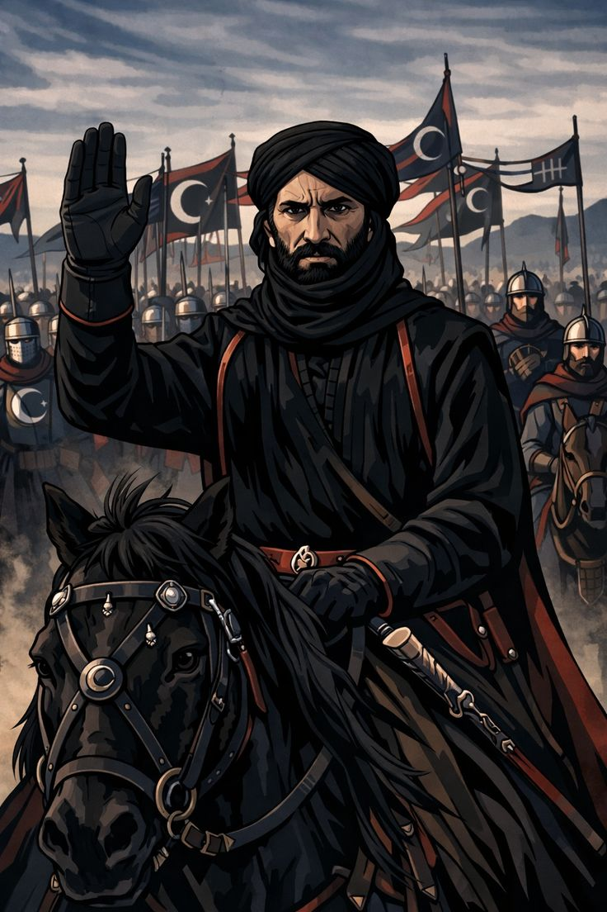
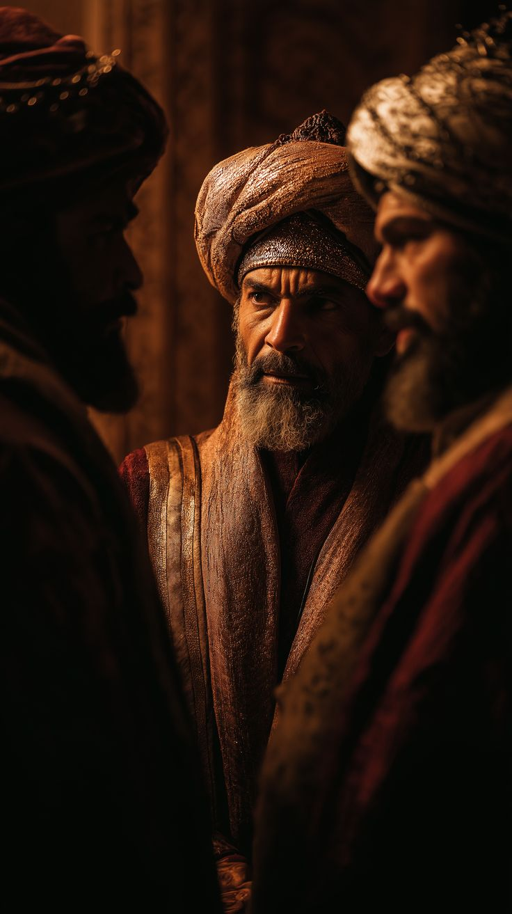
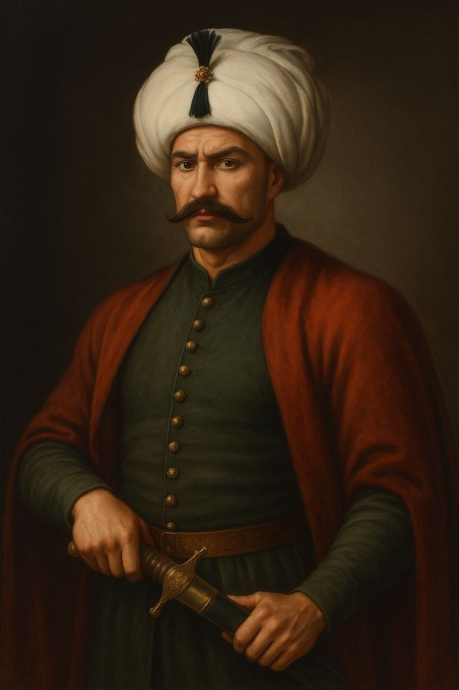

Islamic rulers were powerful leaders who governed vast empires and played a major role in shaping history. They supported the spread of Islam, encouraged education , and built great cities , mosques , and institutions. many of them were known for their leadership , justice, and contributions to science, culture, and architecture.
Sultan Mohammed Ali
Muhammad Ali Pasha was the founder of modern Egypt and a powerful ruler in the 19th century. He introduced major reforms in the army, education, and industry to modernize the country. He also expanded Egypt’s influence and built a strong and organized state.

Sultan Salah Eldin Elayobi
Saladin was a famous Muslim leader and the founder of the Ayyubid dynasty. He is best known for recapturing Jerusalem from the Crusaders during the Crusades. He was admired for his bravery, wisdom, and chivalry, even by his enemies

Harun Al-Rashid
Harun al-Rashid was one of the most famous rulers of the Abbasid Caliphate, known for his strong leadership and influence. He ruled during a golden age when Baghdad became a center of science, culture, and learning. He also supported scholars, artists, and the development of knowledge in many fields.

Sultan Selim I
Often called the "Napoleon of Ancient Egypt," Thutmose III was a brilliant military strategist. He conducted 17 successful campaigns, expanding the Egyptian Empire to its greatest territorial extent, from Syria to the Fourth Cataract of the Nile
